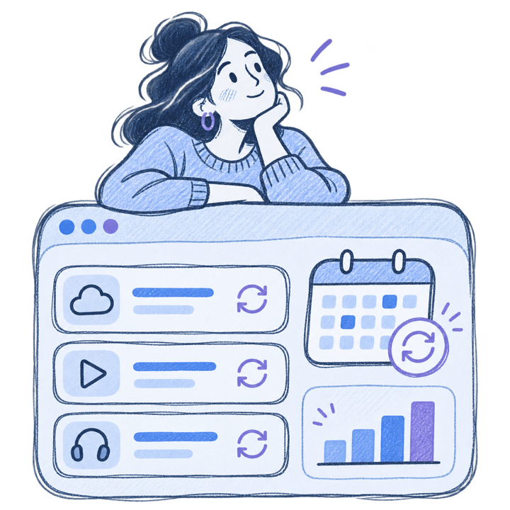

Has anybody already built a CRM for tracking leads on an e-commerce system?
Start with a possibility.
Real questions. Considered approaches.
The thinking is the work.

A CRM that follows the lead, not the spreadsheet
Tracking e-commerce leads from first visit to first order.

Onboarding that feels like a conversation
Replacing setup forms with a few friendly questions.

A knowledge base that answers with sources
Turning scattered team knowledge into answers you can trust.

A marketplace for independent makers
Connecting small makers with people who care about craft.

A subscription dashboard people check on purpose
Making recurring payments visible, predictable and easy to change.
Has anybody already built it?
Has anybody already built a CRM for tracking leads on an e-commerce system?
Yes. Tracking e-commerce leads from first visit to first order. Start from the store’s own events — cart, wishlist, repeat visit — and turn only a few of them into leads. Keep the pipeline to three stages a small team can actually review each morning. The main tradeoff: Fewer, richer leads mean some buyers are never contacted. In return the team trusts the list and acts on it, instead of exporting it to yet another spreadsheet. Read the case study.
Has anybody already built a conversational-based onboarding experience?
Yes. Replacing setup forms with a few friendly questions. Ask two or three plain questions, offer choices as tappable cards, and build an editable example from the answers so the first session begins with progress. The main tradeoff: Conversational steps feel slower to power users, so every question needs a skip and sensible defaults behind it. Read the case study.
Has anybody already built an AI knowledge base that answers with sources?
Yes. Turning scattered team knowledge into answers you can trust. Start with a narrow collection of reviewed documents. Retrieve relevant passages before generating an answer, and show the source beside every claim. Make “I don’t know” a useful outcome. The main tradeoff: A smaller, reviewed knowledge set produces fewer answers, but makes mistakes easier to investigate. Freshness and ownership matter as much as retrieval quality. Read the case study.
Has anybody already built a marketplace for independent makers?
Yes. Connecting small makers with people who care about craft. Choose one narrow buyer need and recruit a small set of makers by hand. Curate the first listings around comparable attributes and learn from unsuccessful searches. The main tradeoff: Manual curation slows expansion but reveals what buyers really need to compare. A large catalog can hide a lack of useful matches. Read the case study.
Has anybody already built a dashboard for managing subscriptions and renewals?
Yes. Making recurring payments visible, predictable and easy to change. Lead with what renews next and what it will cost. Group the rest by cadence, and put pause, skip and cancel one tap away from each row. The main tradeoff: Easy cancellation can lower short-term retention, but it reduces chargebacks and support tickets and earns trust that brings people back. Read the case study.
What is Knowhow?
Knowhow is a library of project case studies that explain the thinking behind a build — the question, the approach, the tradeoffs and the lessons — so you can learn from people who already solved a similar problem and hire them for yours.
How do I contact the person behind a project?
Open any case study and send an inquiry. The builder’s name is shared once you inquire, and every inquiry currently goes to aditya@decisionos.me.
Can I request a project that isn’t listed?
Yes. Use “Post a project request” on the homepage to describe what you want to build and where you are stuck.
The most valuable part of a project
isn’t just what got built.
It’s why someone built it that way.